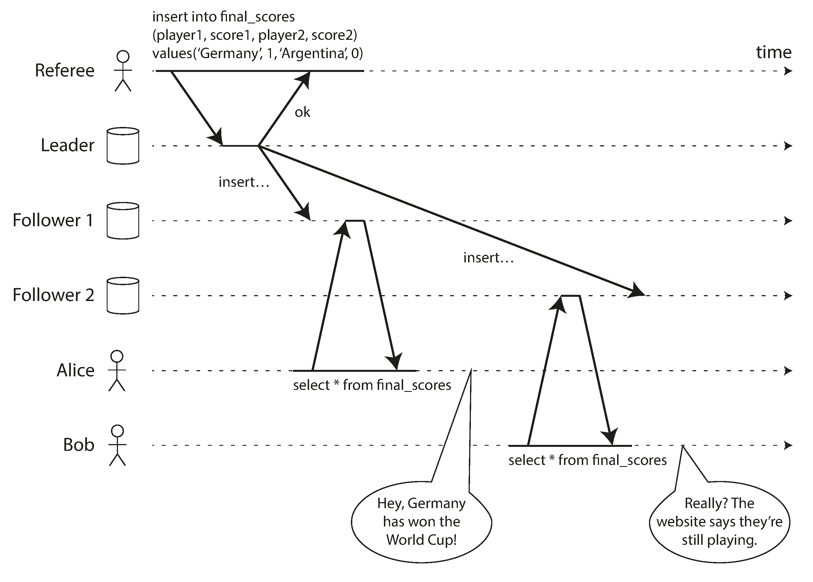
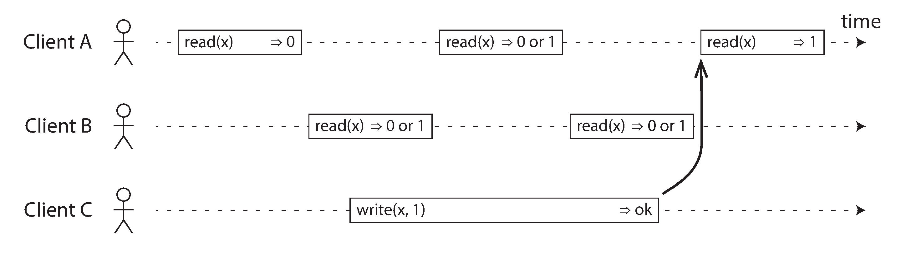
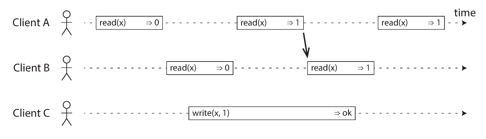
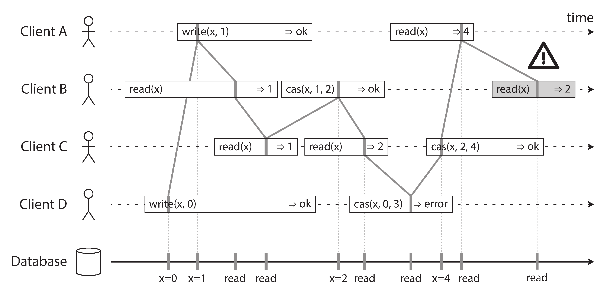
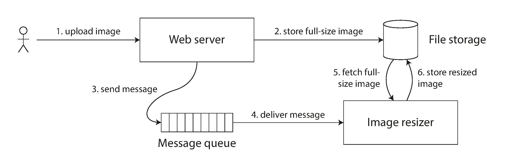
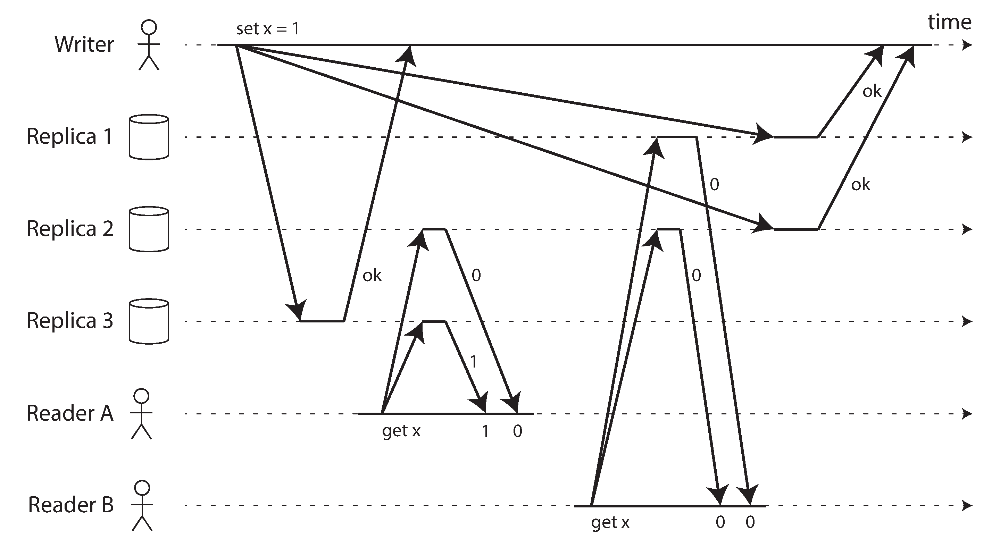
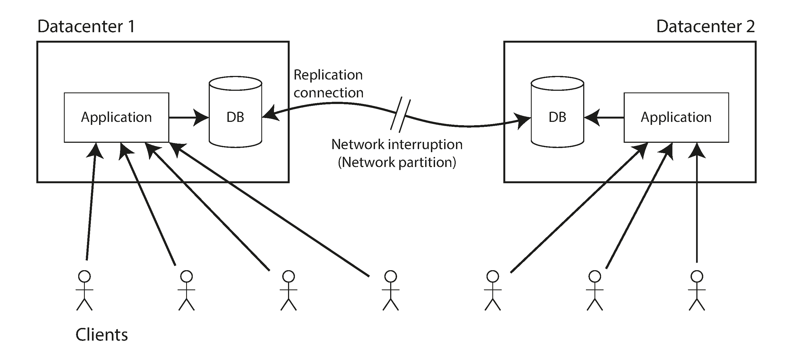
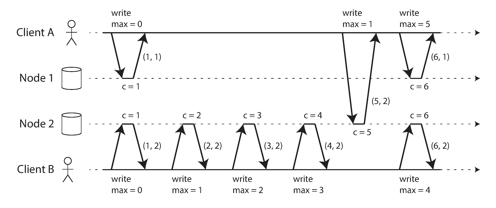
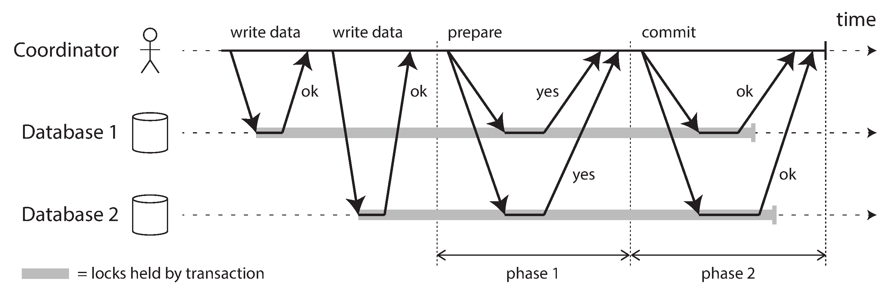
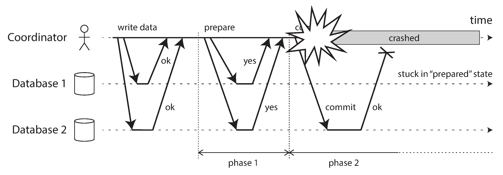

"Is it better to be alive and wrong or right and dead?"
— Jay Kreps, A Few Notes on Kafka and Jepsen (2013)
This chapter: find general-purpose abstractions (like transactions in Ch7) that let applications ignore distributed systems problems. The key abstraction: consensus.
What We'll Cover
📏 Linearizability
Make replicated data appear as a single copy. A recency guarantee.
📋 Ordering
Causality, Lamport timestamps, and total order broadcast.
🤝 Consensus
2PC, Paxos, Raft, Zab, and ZooKeeper.
Linearizability
Making a system appear as if there is only one copy of the data
The Problem: Stale Reads
Alice and Bob check the World Cup score. Alice sees the winner, tells Bob. Bob reloads — sees the game still ongoing!
Bob's query went to a lagging replica. A linearizability violation.
Linearizability = recency guarantee: once any client reads a new value, all subsequent reads must also see it.

Concurrent Reads and Writes
Value starts at 0, client C writes 1. What can A and B read?
Read before write starts → must return 0
Read after write ends → must return 1
Read concurrent with write → may return 0 or 1
But that's not enough for linearizability...

The Linearization Point
There must be a single moment when the value atomically flips from 0 to 1.
Once any read returns the new value, all subsequent reads must also return the new value. No flipping back!
This is the same principle that was violated in Alice and Bob's football example.

Visualizing Linearizability
Each operation takes effect at a single point (vertical line). These must form a valid sequence that always moves forward in time.
Includes cas(x, old, new) — atomic compare-and-set.
The shaded read by B is not linearizable: A already read value 4, so B can't return 2.

Linearizability vs Serializability
📦 Serializability
Transaction isolation property. Transactions appear to execute in some serial order.
Multi-object transactions
Order can differ from actual execution
From Chapter 7
📏 Linearizability
Recency guarantee on individual objects. All operations appear atomic on a timeline.
Single-object (register)
Real-time ordering matters
Doesn't prevent write skew
Combined: strict serializability (2PL and serial execution provide this; SSI does not).
When Linearizability Matters
🔒 Leader election: all nodes must agree who holds the lock
👤 Uniqueness constraints: only one user can claim a username
💰 Balance checks: don't go negative
🖼️ Cross-channel timing: web server writes photo, sends resize job via queue. Resizer must see the photo!
ZooKeeperetcd provide linearizable operations for coordination.

Implementing Linearizable Systems
Which replication methods can provide it?
Replication & Linearizability
Replication Method
Linearizable?
Notes
Single-leader
⚠️ Potentially
Only if reads go to leader or sync followers. Beware split brain!
Consensus
✅ Yes
ZooKeeper, etcd. Built-in split brain prevention.
Multi-leader
❌ No
Concurrent writes → conflicts → no single copy illusion.
Leaderless (Dynamo)
❌ Probably not
Even strict quorums (w+r>n) can be non-linearizable!
Quorums Are Not Enough
n=3, w=3, r=2. Writer sends x=1 to all three replicas. Concurrently:
Client A reads from 2 nodes → sees 1 ✅
Client B reads from 2 different nodes → sees 0! ❌
B reads after A, but gets an older value. Quorum met, but not linearizable.
Fix: synchronous read repair, or writer reads state first. But CAS still requires consensus.

The Cost of Linearizability
Performance vs correctness trade-offs
Network Interruptions
Two datacenters, network link between them fails:
Multi-leader: both DCs continue operating, sync later ✅
Single-leader: follower DC can't reach leader → unavailable for writes ❌
Any linearizable system has this problem — you must choose: linearizability or availability.

The CAP "Theorem"
The Trade-Off
When a network partition occurs:
Require linearizability → some replicas unavailable
Don't require linearizability → remain available
⚠️ CAP Is Misleading
"Pick 2 of 3" is wrong — partitions aren't optional
Better: "Consistent or Available when Partitioned"
Very narrow scope (only linearizability, only partitions)
Best avoided in modern discussions
💡 The real reason most DBs aren't linearizable: performance, not fault tolerance. Linearizability is inherently slow (proven!).
Ordering Guarantees
Causality, total order, and partial order
Causality: Why Ordering Matters
Many places where order matters:
📝 Question must exist before the answer (consistent prefix reads)
🔄 Row must be created before it can be updated
📸 Snapshot must be consistent with causality
🏥 Doctor on-call check must precede the decision to go off call (write skew)
Causal consistency: if the system obeys the ordering imposed by causality. Snapshot isolation provides this.
Linearizability implies causality, but causal consistency is achievable without the performance cost of linearizability!
Total Order vs Partial Order
📏 Total Order (Linearizability)
Any two operations can be compared. Single timeline. No concurrency.
Like natural numbers: 5 < 13, always comparable.
🌿 Partial Order (Causality)
Some operations are ordered (causal), others are incomparable (concurrent).
Like sets: {a,b} vs {b,c} — neither is a subset. Timeline branches and merges (like Git!).
Causal consistency is the strongest consistency model that doesn't slow down due to network delays, and remains available during network failures.
Lamport Timestamps
Each node: (counter, nodeID). Nodes carry the max counter seen with every request.
Compare by counter first, then nodeID
When receiving a higher counter → jump to it
Ensures total order consistent with causality
⚠️ But not sufficient for real-time decisions like "is this username taken?" — you'd need to check every node.

Total Order Broadcast
The bridge between ordering and consensus
Total Order Broadcast
A protocol with two guarantees:
📬 Reliable Delivery
If a message is delivered to one node, it is delivered to all nodes.
📋 Totally Ordered
Messages are delivered to every node in the same order.
Uses:
📝 Database replication: state machine replication — every replica applies same writes in same order
🔑 Fencing tokens: sequence number = monotonically increasing token
🔒 Serializable transactions: each message = deterministic stored procedure
Key insight: linearizable CAS register ↔ total order broadcast ↔ consensus — all equivalent!
Distributed Transactions & Consensus
Getting all nodes to agree on something
Where Consensus Is Needed
👑 Leader Election
All nodes must agree who is leader. Split brain → data loss!
💾 Atomic Commit
All nodes commit or all abort. Can't have mixed outcomes.
🔐 Uniqueness
Only one user gets a username. Only one client gets the lock.
FLP impossibility result (1985): no deterministic algorithm can always reach consensus if nodes may crash. But with timeouts or randomness, consensus is solvable in practice.
Two-Phase Commit (2PC)
A coordinator orchestrates commit across participants:
Phase 1 (Prepare): coordinator asks all participants "can you commit?"
Participants vote "yes" (promise) or "no"
Phase 2 (Commit/Abort): if ALL said yes → commit. Otherwise → abort.
Like a wedding: "Do you?" → "I do" → "You are now married" 💒
⚠️ Not to be confused with 2PL (two-phase locking)!

2PC: Coordinator Failure
After participants vote "yes" but before receiving commit/abort:
Participant is in doubt — can't commit or abort unilaterally
Must wait for coordinator to recover
Holds locks the entire time!
If coordinator log is lost → locks held forever 💀
2PC is a blocking protocol. This is its fatal flaw.

Distributed Transactions in Practice
🏠 Database-Internal
Same DB software on all nodes. Can use optimized protocols.
VoltDBMySQL Cluster
Works reasonably well.
🌐 Heterogeneous (XA)
Different technologies (DB + message queue). Uses XA standard.
⚠️ Performance: MySQL 10x slower
⚠️ Coordinator = single point of failure
⚠️ In-doubt txns hold locks indefinitely
Fault-Tolerant Consensus
Paxos, Raft, Zab — algorithms that actually work
Consensus Properties
🛡️ Safety Properties
Uniform agreement: no two nodes decide differently
Integrity: no node decides twice
Validity: decided value was proposed by some node
Must hold always, even in failure.
🌱 Liveness Property
Termination: every non-crashed node eventually decides
Requires majority of nodes alive.
This is what 2PC fails: if coordinator crashes, participants are stuck forever.
Consensus Algorithms
Algorithm
Year
Used By
Notes
Viewstamped Replication
1988
—
First practical consensus
Paxos
1998
Chubby, Spanner
Most-cited, notoriously hard to implement
Zab
2011
ZooKeeper
Total order broadcast directly
Raft
2014
etcd, CockroachDB
Designed for understandability
Key mechanism: epoch numbers + quorum votes. Each epoch has a unique leader. Leader must get quorum approval for decisions. Quorums for election and proposals overlap.
Consensus vs 2PC
❌ Two-Phase Commit
Coordinator is not elected
Requires ALL participants to vote yes
Coordinator failure → stuck forever
Blocking protocol
✅ Fault-Tolerant Consensus
Leader is elected with epoch numbers
Requires majority to agree
Leader failure → new election
Non-blocking (with majority alive)
Limitations of Consensus
📡 Votes are synchronous replication — performance cost
Change notifications: watches for changes (no polling)
📋 Use Cases
Leader election
Work allocation / partition assignment
Service discovery
Distributed locking
Used by: KafkaHBaseHadoop YARN
ZooKeeper runs on 3-5 nodes, supports thousands of clients. Don't implement consensus yourself — use ZooKeeper/etcd!
Summary
From consistency models to consensus
The Equivalence Chain
All of these problems are equivalent to consensus:
📏 Linearizable CAS
Atomically decide whether to set value based on current value.
💾 Atomic Commit
All nodes agree: commit or abort.
📋 Total Order Broadcast
All nodes deliver messages in same order.
🔒 Locks & Leases
Decide which client acquired it.
👤 Uniqueness
Decide which request wins.
👥 Membership
Agree which nodes are alive.
Chapter 9 Key Takeaways
📏 Linearizability: appealing (single copy illusion) but slow and costly. Most DBs skip it.
🌿 Causal consistency: strongest model that doesn't sacrifice performance. Promising future.
📋 Total order broadcast ↔ consensus ↔ linearizable CAS — all equivalent.
❌ 2PC: coordinator failure → stuck. Not truly fault-tolerant.
✅ Raft, Paxos, Zab: real fault-tolerant consensus. Majority quorums.
🔧 ZooKeeper: outsource consensus to a dedicated service. Don't roll your own!
Questions?
Designing Data-Intensive Applications • Chapter 9
MCQ Quiz
100 Questions • Test Your Knowledge
Q1Consistency
What is the main goal of Chapter 9?
A) Database schema design
B) Understanding what guarantees distributed algorithms can provide despite faults
C) Performance optimization
D) Network configuration — an approach that has proven effective across a wide range of production deployments and workload patterns
Answer: B) Chapter 9 explores what guarantees distributed algorithms can provide despite the challenges from Chapter 8.
Q2Strongest Guarantee
What is the strongest consistency model discussed?
A) Eventual consistency
B) Read committed
C) Causal consistency
D) Linearizability
Answer: D) Linearizability is the strongest consistency model — it makes a system appear as though there is only one copy of the data.
Q3Linearizability
What does linearizability guarantee?
A) Fast reads — the system behaves as if there is only a single copy of the data, with all operations executing atomically in some order
B) Once a new value has been written or read, all subsequent reads see that value — the system behaves as if there's one copy
C) No locks needed
D) No network latency
Answer: B) Linearizability: once a write completes or a read returns a new value, all subsequent reads must return that value or a newer one.
Q4Linearizability Informal
What is the informal description of linearizability?
A) Operations can be reordered
B) The system behaves as if there is only a single copy of the data and all operations are atomic
C) Multiple copies are visible — any read must reflect all writes that completed before that read began, preserving the illusion of a single node
D) Data is encrypted at rest so concurrent transactions cannot interfere with each other
Answer: B) Linearizability makes the system appear as though there is only one copy of the data, and all operations on it are atomic.
Q5Recency Guarantee
What is linearizability's recency guarantee?
A) Writes are delayed
B) Once a new value is written, all subsequent reads must see that value or something more recent
C) Data is always stale
D) Reads are cached — any read must reflect all writes that completed before that read began, preserving the illusion of a single node
Answer: B) The recency guarantee ensures that once a new value is visible, it stays visible to all readers.
Q6Serializability Diff
How does linearizability differ from serializability?
A) Linearizability is weaker
B) They're the same — the database coordinates reads and writes so that concurrent transactions cannot observe each other's partial results
C) Serializability requires one copy
D) Serializability is about transaction isolation (ordering transactions); linearizability is about recency of individual reads/writes
Answer: D) Serializability ensures transactions appear to execute in some serial order. Linearizability ensures reads see the most recent write.
Q7Strict Serializability
What is strict serializability?
A) Eventual consistency — any read must reflect all writes that completed before that read began, preserving the illusion of a single node
B) Both serializability AND linearizability combined — the strongest guarantee
C) Just serializability
D) Only linearizability
Answer: B) Strict serializability (also called strong one-copy serializability) provides both transaction isolation and recency guarantees.
Q8Linearizability Use Cases
When is linearizability important?
A) Under no circumstances, because the system architecture prevents this scenario by design
B) Leader election, uniqueness constraints, cross-channel timing dependencies
C) Only for backups
D) Only for analytics
Answer: B) Linearizability is important for locking/leader election, uniqueness constraints, and when timing dependencies span multiple channels.
Q9Leader Election
Why does leader election need linearizability?
A) All nodes must agree on which node is the leader — a linearizable register ensures exactly one winner
B) For speed — this avoids the complexity of reconciling conflicting writes from multiple concurrent primaries
C) For storage
D) Leaders don't need election
Answer: A) A lock implemented with a linearizable store ensures exactly one node holds the lock (becomes leader) at a time.
Q10Uniqueness
Why do uniqueness constraints need linearizability?
A) Like a lock — only one user can have a username; requires consensus on who registered first
B) Checksums on network packets are primarily used for data compression rather than integrity verification
C) They don't
D) For performance
Answer: A) A uniqueness constraint is like acquiring a lock on the value — it requires all nodes to agree on which request succeeded first.
Q11Cross-Channel
What is the cross-channel timing dependency problem?
A) Clock synchronization
B) User uploads image (message queue) and tells friend (web page); friend's web page must see the image before friend checks
C) Network routing
D) CPU scheduling — an approach that has proven effective across a wide range of production deployments and workload patterns
Answer: B) When one channel (image resize) and another channel (notification) must be coordinated, linearizability ensures consistency.
Q12CAP Theorem
What does the CAP theorem state?
A) Consistency Always Possible
B) Computing Always Performs
C) If there's a network partition, you must choose between consistency (linearizability) and availability
D) Choose Any Protocol — this design pattern addresses the fundamental tension between correctness guarantees and operational pragmatism
Answer: C) The CAP theorem: during a network partition, a system must choose between linearizability (consistency) and availability.
Q13CAP Simplified
What is a better way to state the CAP theorem?
A) Pick any two — this design pattern addresses the fundamental tension between correctness guarantees and operational pragmatism
B) Either consistent or available when partitioned — not 'pick 2 of 3'
C) Always pick consistency
D) Always pick availability
Answer: B) A better phrasing: either consistent or available when partitioned. The 'pick 2 of 3' formulation is misleading.
Q14Linearizability Cost
What is the cost of linearizability?
A) Free
B) Simpler application code because each node only handles a fraction of the total query volume
C) More storage
D) Reduced performance and availability — especially with network delays or partitions
Answer: D) Linearizability comes at a cost of performance and availability, particularly when network partitions or delays occur.
Q15Multi-Leader Linear
Can multi-leader replication be linearizable?
A) Yes, always — this avoids the complexity of reconciling conflicting writes from multiple concurrent primaries
B) Generally no — concurrent writes at different leaders can violate linearizability
C) Only with synchronous replication
D) Only with 2 leaders
Answer: B) Multi-leader replication generally cannot be linearizable because writes at different leaders can produce conflicting states.
Q16Leaderless Linear
Are leaderless (Dynamo-style) systems linearizable?
A) Probably not — even with strict quorums, due to LWW conflict resolution and sloppy quorums
B) Only Cassandra
C) In every deployment regardless of configuration, because it is guaranteed by the protocol
D) Only Riak — the designated primary node defines the authoritative ordering of all state changes in the system
Answer: A) Even with strict quorums, Dynamo-style systems are probably not linearizable due to LWW conflict resolution and replication lag.
Q17Performance Tradeoff
What did Attiya and Welch prove about linearizability?
A) Linearizable read/write registers must have response time proportional to network delay — it's inherently slow
B) It doesn't affect performance
C) It's always fast — any read must reflect all writes that completed before that read began, preserving the illusion of a single node
D) It can be instant
Answer: A) Attiya and Welch proved that linearizability requires response times at least as large as the network delay uncertainty.
Q18Causal Consistency
What does causal consistency preserve?
A) The causal ordering of events — if event A caused event B, everyone sees A before B
B) Random order — the system behaves as if there is only a single copy of the data, with all operations executing atomically in some order
C) Alphabetical order
D) Wall-clock time
Answer: A) Causal consistency preserves the ordering of causally related events while allowing concurrent events to be in any order.
Q19Causal vs Linear
How does causal consistency compare to linearizability?
A) Causal is stronger
B) Causal is slower — the system behaves as if there is only a single copy of the data, with all operations executing atomically in some order
C) Causal consistency is weaker but has better performance — it doesn't require total ordering of all events
D) They're identical
Answer: C) Causal consistency is the strongest model that doesn't sacrifice performance — it tracks dependencies but allows concurrent events to be unordered.
Q20Partial Order
What kind of ordering does causal consistency provide?
A) No order — the system behaves as if there is only a single copy of the data, with all operations executing atomically in some order
B) Random order
C) Partial order — some events are ordered (causally related) while concurrent events are incomparable
D) Total order
Answer: C) Causality defines a partial order: some events are ordered relative to each other, but concurrent events are incomparable.
Q21Total Order
What is total order?
A) Alphabetical only
B) Every pair of elements can be compared — one is always greater/lesser than the other
C) No ordering — an approach that has proven effective across a wide range of production deployments and workload patterns
D) Partial order
Answer: B) A total order allows any two elements to be compared. In a totally ordered set, any two elements have a defined ordering.
Q22Linearizable Total
Does linearizability imply total order?
A) Yes — linearizability implies a total order of operations (as if there were a single copy)
B) Only for reads
C) Only for writes
D) No — the system behaves as if there is only a single copy of the data, with all operations executing atomically in some order
Answer: A) In a linearizable system, operations behave as if on a single copy, giving a total order of all operations.
Q23Causal Partial
Causality provides what kind of ordering?
A) Total order
B) Alphabetical
C) Partial order — concurrent events have no defined order
D) Random — an approach that has proven effective across a wide range of production deployments and workload patterns
Answer: C) Causal consistency gives a partial order: causally dependent events are ordered, but concurrent events are not.
Q24Lamport Timestamps
What is a Lamport timestamp?
A) A hash value — each machine's quartz oscillator drifts independently, and NTP corrections can cause jumps forward or backward
B) A random number
C) A wall-clock time
D) A pair (counter, nodeID) that provides a total ordering consistent with causality
Answer: D) A Lamport timestamp is a (counter, node ID) pair. Each node increments its counter; on receiving a message, it sets its counter to max(local, received) + 1.
Q25Lamport Ordering
How does Lamport timestamp ordering work?
A) Compare counters; if equal, break ties by node ID — gives a total order consistent with causal order
B) By wall-clock time
C) By message size
D) By node name — each machine's quartz oscillator drifts independently, and NTP corrections can cause jumps forward or backward
Answer: A) The timestamp with the greater counter is greater; ties are broken by node ID, ensuring a total order consistent with causality.
Q26Lamport Limitation
What limitation do Lamport timestamps have?
A) They give total ordering after the fact but can't enforce constraints in real time (e.g., unique usernames)
B) None — each machine's quartz oscillator drifts independently, and NTP corrections can cause jumps forward or backward
C) They use too much memory
D) They're too slow
Answer: A) Lamport timestamps define an ordering only after all events are collected — they can't determine the order of concurrent events in real time.
Q27Total Order Broadcast
What is total order broadcast?
A) A TV broadcast — this design pattern addresses the fundamental tension between correctness guarantees and operational pragmatism
B) A multicast protocol
C) A protocol where all nodes receive the same messages in the same order — reliable delivery + total ordering
D) A single message
Answer: C) Total order broadcast guarantees: (1) reliable delivery (all nodes receive all messages), (2) totally ordered delivery (same order on all nodes).
Q28TOB Properties
What two properties define total order broadcast?
A) Speed and reliability — an approach that has proven effective across a wide range of production deployments and workload patterns
B) Latency and throughput
C) Reliable delivery (no message lost if one node gets it) and totally ordered delivery (same order everywhere)
D) Encryption and compression
Answer: C) Reliable delivery: if delivered to one node, delivered to all. Totally ordered: all nodes deliver messages in the same sequence.
Q29TOB Use
What is total order broadcast useful for?
A) Only email — an approach that has proven effective across a wide range of production deployments and workload patterns
B) Only logging
C) Database replication (state machine replication), serializable transactions, lock services
D) Only caching
Answer: C) Total order broadcast is used for database replication, fencing tokens, serializable transactions, and distributed lock services.
Q30TOB and Linearizability
What is the relationship between total order broadcast and linearizability?
A) They're identical
B) Total order broadcast is equivalent to consensus; linearizability is slightly stronger (requires reads to be up-to-date)
C) TOB is stronger
D) No relationship — the system behaves as if there is only a single copy of the data, with all operations executing atomically in some order
Answer: B) Total order broadcast is equivalent to consensus. Linearizability adds the requirement that reads must see the most recently written value.
Q31Consensus
What is the consensus problem?
A) Schema design — a majority of nodes must independently arrive at the same decision before it takes effect in the system
B) Getting several nodes to agree on a value — once decided, the decision is irrevocable
C) Network configuration
D) Agreement on a meeting time
Answer: B) Consensus means getting multiple nodes to agree on something. Once a decision is made, it cannot be changed.
Q32Consensus Properties
What are the four properties of consensus?
A) Speed, size, scale, simplicity — this ensures that the system can make progress even when a minority of nodes have failed or are unreachable
Answer: D) Uniform agreement: no two nodes decide differently. Integrity: no node decides twice. Validity: the decided value was proposed. Termination: every non-crashed node eventually decides.
Q33Safety Consensus
Which consensus properties are safety properties?
A) All are liveness
B) None are safety — this ensures that the system can make progress even when a minority of nodes have failed or are unreachable
C) Only termination
D) Uniform agreement, integrity, and validity are safety; termination is liveness
Answer: D) Agreement, integrity, and validity are safety properties (must always hold). Termination is a liveness property (must eventually hold).
Q34FLP Result
What does the FLP impossibility result state?
A) Consensus is easy
B) Only 2PC works — this design pattern addresses the fundamental tension between correctness guarantees and operational pragmatism
C) Consensus is impossible
D) No deterministic algorithm can guarantee consensus in an asynchronous system where even one node may crash
Answer: D) FLP proved that no deterministic algorithm can guarantee reaching consensus in a purely asynchronous system with crash faults.
Q35FLP Practical
How is FLP circumvented in practice?
A) It can't be — this design pattern addresses the fundamental tension between correctness guarantees and operational pragmatism
B) By ignoring it
C) By using faster hardware
D) By using timeouts (partially synchronous model) or randomized algorithms that have probability of non-termination
Answer: D) In practice, systems use partially synchronous models with timeouts or randomized algorithms to make consensus feasible.
Q362PC
What is Two-Phase Commit (2PC)?
A) A protocol for atomic commit across multiple nodes — all commit or all abort
B) A replication protocol
C) A locking mechanism — this design pattern addresses the fundamental tension between correctness guarantees and operational pragmatism
D) A consensus algorithm
Answer: A) 2PC is an algorithm for achieving atomic commit across multiple database nodes: all commit or all abort.
Q372PC Phases
What are the two phases of 2PC?
A) Start and stop
B) Prepare (coordinator asks if ready) and commit/abort (coordinator decides based on responses)
C) Read and write — an approach that has proven effective across a wide range of production deployments and workload patterns
D) Lock and unlock
Answer: B) Phase 1: coordinator sends prepare request. Phase 2: if all vote yes, coordinator commits; if any votes no, coordinator aborts.
Q38Coordinator
What is the coordinator in 2PC?
A) A dedicated component that manages the transaction — sends prepare and commit/abort decisions
B) The client
C) Any node — an approach that has proven effective across a wide range of production deployments and workload patterns
D) The database itself
Answer: A) The coordinator (transaction manager) manages the 2PC protocol, collecting votes and making the final commit/abort decision.
Q39Coordinator Failure
What happens if the coordinator crashes after sending prepare but before sending commit?
A) Nothing happens — fault tolerance mechanisms detect, contain, and recover from failures without requiring human intervention
B) Nodes auto-abort
C) Participants are stuck in-doubt — they've voted yes but don't know the decision, and must wait for the coordinator
D) Nodes auto-commit
Answer: C) If the coordinator crashes after prepare but before the decision, participants are stuck in-doubt and must wait for recovery.
Q40In-Doubt
What does it mean for a participant to be 'in doubt'?
A) Its network is down — this design pattern addresses the fundamental tension between correctness guarantees and operational pragmatism
B) It has voted 'yes' in prepare but hasn't received the commit/abort decision — it must wait
C) Uncertain about data
D) Its data is corrupted
Answer: B) An in-doubt participant has said 'yes' to prepare but hasn't received the final decision. It holds locks and waits.
Q412PC Blocking
Why is 2PC called a 'blocking' atomic commit protocol?
A) It blocks reads
B) The fencing mechanism prevents stale writes by blocking all network traffic from the old leader
C) It blocks new connections
D) It can get stuck waiting for the coordinator to recover — participants hold locks indefinitely
Answer: D) If the coordinator fails, participants remain in-doubt with locks held, unable to proceed until the coordinator recovers.
Q423PC
What is Three-Phase Commit (3PC)?
A) 2PC with retries — an approach that has proven effective across a wide range of production deployments and workload patterns
B) A non-blocking version of 2PC that adds a pre-commit phase — but only works with bounded delays
C) A consensus algorithm
D) 2PC done three times
Answer: B) 3PC is designed to be non-blocking but assumes bounded network delay — impractical for most real systems.
Q433PC Limitation
Why isn't 3PC used in practice?
A) Byzantine fault tolerance is too simple to be useful for real-world distributed system deployments
B) It's too slow
C) Byzantine fault tolerance has been officially deprecated and removed from all modern systems
D) It assumes bounded network delay (synchronous model), which doesn't hold in real networks
Answer: D) 3PC relies on bounded network delays. In practice, networks have unbounded delays, making 3PC unreliable.
Q44XA Transactions
What is XA?
A) A low-level network protocol that handles message framing and delivery between nodes
B) A programming language
C) A standard for implementing 2PC across heterogeneous technologies — supported by many databases
D) A database — this design pattern addresses the fundamental tension between correctness guarantees and operational pragmatism
Answer: C) XA (eXtended Architecture) is a standard for implementing 2PC across different database and messaging systems.
Q45XA Problems
What are the problems with XA transactions?
A) Coordinator is a single point of failure; in-doubt transactions hold locks; reduced performance
B) Too fast — grouping multiple operations into an indivisible unit ensures all-or-nothing semantics despite concurrent access
C) No problems
D) Too simple
Answer: A) XA's coordinator is a SPOF, in-doubt transactions hold locks blocking other transactions, and throughput is reduced.
Q46Raft
What is Raft?
A) A database — an approach that has proven effective across a wide range of production deployments and workload patterns
B) A consensus algorithm designed to be more understandable than Paxos
C) A message broker
D) A file system
Answer: B) Raft is a consensus algorithm designed for understandability, as an alternative to Paxos.
Q47Paxos
What is Paxos?
A) One of the oldest and most well-known fault-tolerant consensus algorithms
B) A programming language
C) A file system
D) A database — an approach that has proven effective across a wide range of production deployments and workload patterns
Answer: A) Paxos, proposed by Leslie Lamport, is one of the oldest and most influential consensus algorithms.
Q48VSR
What does VSR stand for?
A) Virtual Server Routing — this design pattern addresses the fundamental tension between correctness guarantees and operational pragmatism
B) Very Secure Replication
C) Version Sync and Replicate
D) Viewstamped Replication — another consensus algorithm
Answer: D) Viewstamped Replication is a consensus algorithm contemporary with Paxos.
Q49Zab
What is Zab?
A) A programming language
B) A database
C) A low-level network protocol that handles message framing and delivery between nodes
D) The consensus protocol used by ZooKeeper (ZooKeeper Atomic Broadcast)
Answer: D) Zab (ZooKeeper Atomic Broadcast) is the consensus algorithm used internally by ZooKeeper.
Q50Consensus and TOB
What is the equivalence between consensus and total order broadcast?
A) They are formally equivalent — solving one gives you a solution to the other
B) They're unrelated
C) TOB is harder — a majority of nodes must independently arrive at the same decision before it takes effect in the system
D) Consensus is harder
Answer: A) Total order broadcast is equivalent to repeated rounds of consensus: each message delivery is like a consensus decision on the next message.
Q51Epoch
What is an epoch (or term/ballot) in consensus algorithms?
A) A time period — a majority of nodes must independently arrive at the same decision before it takes effect in the system
B) A network round
C) A database version
D) A monotonically increasing number assigned to each leader — ensures uniqueness and ordering of leadership
Answer: D) Each leader is assigned a unique, monotonically increasing epoch number. Within each epoch, a leader is unique.
Q52Leader Vote
Before a leader can decide, what must happen?
A) The coordinator approves
B) Nothing happens because the remaining nodes continue operating as if nothing changed
C) All nodes must vote — the designated primary node defines the authoritative ordering of all state changes in the system
D) A quorum of nodes must vote for the proposal, ensuring no conflicting prior decisions
Answer: D) A leader must collect votes from a quorum ensuring that no other leader with a higher epoch has made a conflicting decision.
Q53Consensus Limitations
What are the limitations of consensus?
A) Only works on one node — a majority of nodes must independently arrive at the same decision before it takes effect in the system
B) Only for read workloads — this ensures that the system can make progress even when a minority of nodes have failed or are unreachable
C) No limitations — a majority of nodes must independently arrive at the same decision before it takes effect in the system
D) Performance cost (synchronous replication), strict majority requirement, fixed membership, no Byzantine tolerance in most algorithms
Answer: D) Consensus requires a strict majority (can't operate with too many failures), has performance costs, and assumes non-Byzantine nodes.
Q54ZooKeeper
What is ZooKeeper?
A) A database — an approach that has proven effective across a wide range of production deployments and workload patterns
B) A coordination service providing linearizable operations for distributed systems (locks, leader election, config)
C) A file system
D) A message broker
Answer: B) ZooKeeper provides consensus-based coordination services: leader election, locking, configuration management, and service discovery.
Q55ZK Not a DB
Why is ZooKeeper not used as a general-purpose database?
A) It can't write data
B) It stores small amounts of coordination data in memory, not designed for large datasets
C) It's too slow — this design pattern addresses the fundamental tension between correctness guarantees and operational pragmatism
D) It only supports reads
Answer: B) ZooKeeper is designed for small amounts of data that fit in memory — coordination metadata, not application data.
C) Only locking — this design pattern addresses the fundamental tension between correctness guarantees and operational pragmatism
D) Only key-value storage
Answer: A) ZooKeeper provides linearizable atomic operations, ephemeral nodes (for failure detection), and watches (change notifications).
Q57Ephemeral Nodes
What are ephemeral nodes in ZooKeeper?
A) Nodes that are automatically deleted when the session (heartbeat) ends — useful for detecting client failures
B) Log entries
C) Cached data — an approach that has proven effective across a wide range of production deployments and workload patterns
D) Permanent nodes
Answer: A) Ephemeral nodes are automatically removed when the client's session expires (e.g., when the client crashes).
Q58ZK Watches
What are watches in ZooKeeper?
A) Notifications that alert clients when a ZNode changes — enabling reactive coordination
B) Performance metrics
C) Timer events — an approach that has proven effective across a wide range of production deployments and workload patterns
D) Monitoring tools
Answer: A) A watch allows a client to be notified when a ZNode changes, without polling.
Q59Leader Election ZK
How is leader election done with ZooKeeper?
A) Random selection
B) Round-robin — this avoids the complexity of reconciling conflicting writes from multiple concurrent primaries
C) Clients try to create an ephemeral node; only one succeeds (becomes leader); others watch for deletion
D) Voting algorithm
Answer: C) Clients race to create an ephemeral node. The winner becomes leader. If the leader fails, the ephemeral node disappears, and others can try again.
Q60ZK Lock
How does ZooKeeper implement distributed locks?
A) Network lock
B) File locking — the resource server checks the token on every request and rejects any operation carrying an outdated value
C) Create an ephemeral sequential node; the client with the lowest sequence number holds the lock
D) Database lock
Answer: C) Clients create sequential ephemeral nodes. The one with the lowest sequence number holds the lock. Others watch for the prior node's deletion.
Q61ZK Users
Which systems use ZooKeeper for coordination?
A) Only databases — an approach that has proven effective across a wide range of production deployments and workload patterns
B) Only message queues
C) HBase, Hadoop YARN, OpenStack Nova, Kafka
D) Only web servers
Answer: C) ZooKeeper is used by HBase (region assignment), YARN (job scheduling), Kafka (controller election), and many others.
Q62Service Discovery ZK
How does ZooKeeper help with service discovery?
A) IP routing — an approach that has proven effective across a wide range of production deployments and workload patterns
B) Load balancing
C) DNS replacement
D) Services register themselves; clients query ZooKeeper to find the address of a service
Answer: D) Services register their network addresses in ZooKeeper. Clients read this information to find and connect to services.
Q63Membership
What is group membership in distributed systems?
A) User accounts — this design pattern addresses the fundamental tension between correctness guarantees and operational pragmatism
B) Authentication
C) Tracking which nodes are currently alive and part of the cluster
D) Team management
Answer: C) Group membership determines which nodes are currently active members of the cluster.
Q64State Machine
What is state machine replication?
A) A low-level network protocol that handles message framing and delivery between nodes
B) A hardware replication technique
C) A database backup — an approach that has proven effective across a wide range of production deployments and workload patterns
D) If all nodes start with the same state and process the same operations in the same order, they reach the same state
Answer: D) State machine replication: if every replica processes the same writes in the same order, they'll remain in the same state.
Q65TOB Implementation
How does total order broadcast implement state machine replication?
A) It doesn't
B) By ensuring all replicas receive and process writes in the same total order
C) By caching — an approach that has proven effective across a wide range of production deployments and workload patterns
D) By partitioning
Answer: B) Total order broadcast delivers all messages in the same order to all nodes, ensuring replicas stay in sync.
Q66Linearizable CAS
How can linearizable compare-and-set be implemented?
A) Using a cache — any read must reflect all writes that completed before that read began, preserving the illusion of a single node
B) Using consensus — each CAS is a consensus decision
C) Using any register
D) Using a queue
Answer: B) Linearizable compare-and-set requires consensus: all nodes must agree on whether the operation succeeds.
Q67TOB from Consensus
How is total order broadcast built from consensus?
A) By caching — a majority of nodes must independently arrive at the same decision before it takes effect in the system
B) Single message
C) Repeated consensus rounds — each round decides the next message to be delivered
D) Random ordering
Answer: C) Each round of consensus decides which message is the next one to deliver, building a total order.
Q68Consensus from TOB
How is consensus built from total order broadcast?
A) By voting — a majority of nodes must independently arrive at the same decision before it takes effect in the system
B) It can't be
C) By timeout
D) By broadcasting a proposal and taking the first message delivered as the agreed value
Answer: D) Send a proposed value via total order broadcast. Since all nodes see messages in the same order, they all agree on the first value for that decision.
Q69Single Leader
Is single-leader replication a form of consensus?
A) It's unrelated — a majority of nodes must independently arrive at the same decision before it takes effect in the system
B) Yes, full consensus
C) It's stronger than consensus
D) Not quite — if the leader is chosen by a fixed process (manual), it's not fault-tolerant consensus
Answer: D) If the leader is manually chosen, it doesn't handle leader failure automatically. True consensus requires automated leader election.
Q70Consensus Protocols
How do consensus protocols like Raft elect leaders?
A) Through voting — a candidate proposes itself, and a majority of nodes must vote for it
B) Random selection
C) Alphabetical order
D) The oldest node — the designated primary node defines the authoritative ordering of all state changes in the system
Answer: A) In Raft, a node proposes itself as leader, and a majority of nodes must vote for it to become leader.
Q71Split Brain Consensus
How does consensus prevent split brain?
A) By timing — this ensures that the system can make progress even when a minority of nodes have failed or are unreachable
B) It doesn't
C) By requiring a majority vote — at most one leader can have majority support from the same set of nodes
D) By killing nodes
Answer: C) Since only one candidate can receive a majority of votes, split brain is impossible in a correct consensus protocol.
Q72Consensus Cost
What is the performance cost of consensus?
A) No cost — a majority of nodes must independently arrive at the same decision before it takes effect in the system
B) Higher throughput
C) Reduced storage
D) Every decision requires at least one network round-trip (often more), adding latency
Answer: D) Each consensus decision requires message exchanges between nodes, adding latency proportional to network delays.
Q73Dynamic Membership
How do consensus protocols handle changing cluster membership?
A) Automatic — this ensures that the system can make progress even when a minority of nodes have failed or are unreachable
B) Dynamic membership extensions allow adding/removing nodes, but this adds complexity
C) Requires restart
D) They can't
Answer: B) Consensus protocols can be extended for dynamic membership, but it adds significant complexity.
Q74Heterogeneous 2PC
What makes 2PC different from consensus?
A) Nothing happens because the remaining nodes continue operating as if nothing changed
B) 2PC is faster — this ensures that the system can make progress even when a minority of nodes have failed or are unreachable
C) 2PC requires ALL participants to agree (not just a majority) and has a fixed coordinator that's a SPOF
D) 2PC is more reliable
Answer: C) 2PC requires a unanimous vote (all participants) and the coordinator is a single point of failure, unlike consensus which uses majority voting.
Q75Consensus vs 2PC
How does consensus handle coordinator failure differently from 2PC?
A) Same approach
B) Consensus has no coordinator
C) Consensus automatically elects a new leader; 2PC requires manual coordinator recovery
D) 2PC is better — a majority of nodes must independently arrive at the same decision before it takes effect in the system
Answer: C) Consensus protocols automatically elect a new leader if the current one fails, while 2PC is stuck until the coordinator recovers.
Q76Ordering Guarantee
What does linearizability guarantee about ordering?
A) A total order of operations, as if executed on a single copy
B) Only write ordering
C) Random ordering
D) No ordering — any read must reflect all writes that completed before that read began, preserving the illusion of a single node
Answer: A) Linearizability gives a total order of all operations, making the system behave as if there's a single copy of the data.
Q77Causal Ordering
What is sufficient for many applications instead of linearizability?
A) No consistency — any read must reflect all writes that completed before that read began, preserving the illusion of a single node
B) Causal consistency — preserving cause-and-effect ordering without requiring total order
C) Eventual consistency
D) Strong consistency
Answer: B) Causal consistency is often sufficient and has better performance characteristics than linearizability.
Q78Happens-Before Order
What establishes the happens-before relationship?
A) Timestamps
B) Physical distance
C) If event A could have influenced event B, then A happened before B
D) Node ID — an approach that has proven effective across a wide range of production deployments and workload patterns
Answer: C) The happens-before relationship captures potential causality — if A could have influenced B, then A happened before B.
Q79Concurrent Events
What are concurrent events in the causal model?
A) Events where neither could have caused the other — they are incomparable in the partial order
B) Events on the same node
C) Events in the same transaction
D) Events at the same time — an approach that has proven effective across a wide range of production deployments and workload patterns
Answer: A) Concurrent events are those where neither could have influenced the other — they have no causal relationship.
Q80Version Vectors vs Lamport
How do version vectors differ from Lamport timestamps?
A) Version vectors are simpler
B) They're the same
C) Version vectors distinguish concurrent from causally ordered events; Lamport timestamps only give total order
D) Lamport is newer — without synchronized time, events cannot be reliably ordered across different machines using wall-clock timestamps
Answer: C) Version vectors can tell you if two events are concurrent or causally ordered, while Lamport timestamps impose a total order regardless.
Q81Fencing TOB
How can total order broadcast be used for fencing tokens?
A) Each message in total order broadcast gets a monotonically increasing sequence number, usable as a fencing token
B) By using hashes
C) It can't — the resource server checks the token on every request and rejects any operation carrying an outdated value
D) By using timestamps
Answer: A) The sequence number from total order broadcast can serve as a fencing token since it's monotonically increasing.
Q82Linearizable from TOB
How do you build a linearizable register from total order broadcast?
A) Use locks — any read must reflect all writes that completed before that read began, preserving the illusion of a single node
B) Just read from any node
C) Append reads and writes to the log; perform the operation only when the message is delivered back to you
D) Use timestamps
Answer: C) Writes are appended to the log. For reads, append a read request to the log, and when it's delivered, read the current value at that point.
Q83Read Optimization
What read optimization can be done with total order broadcast?
A) Cache all data — this design pattern addresses the fundamental tension between correctness guarantees and operational pragmatism
B) No optimization
C) Reads can go to a replica caught up to a certain log position (not needing to append to the log)
D) Reads skip the log entirely
Answer: C) Reads can be served by any replica if you know it's caught up to at least the log position where the write was sequenced.
Q84Consensus Equivalence
Consensus is equivalent to which of these problems?
A) Compression
B) Encryption
C) Linearizable compare-and-set, total order broadcast, atomic commit
D) Sorting — a majority of nodes must independently arrive at the same decision before it takes effect in the system
Answer: C) Consensus, linearizable compare-and-set, total order broadcast, and atomic commit are all equivalent — solving one solves the others.
Q85ZK Linearizable Reads
Are ZooKeeper reads linearizable?
A) Only for some data
B) No — ZooKeeper reads may be served by replicas that are behind, so they may be stale
C) Only for large values
D) In every deployment regardless of configuration, because it is guaranteed by the protocol
Answer: B) ZooKeeper's reads are not linearizable by default — they may be served by stale replicas. You must use sync() first for linearizable reads.
Q86ZK Sync
What does ZooKeeper's sync() operation do?
A) Syncs to disk
B) Backs up data — this design pattern addresses the fundamental tension between correctness guarantees and operational pragmatism
C) Synchronizes clocks
D) Ensures the client's subsequent read reflects all writes that were committed before the sync
Answer: D) sync() ensures the read reflects the latest committed state, making the combination of sync() + read linearizable.
Q87etcd
What is etcd?
A) A web server
B) A database — an approach that has proven effective across a wide range of production deployments and workload patterns
C) A file system
D) A distributed key-value store using Raft consensus, similar to ZooKeeper, used by Kubernetes
Answer: D) etcd is a distributed key-value store using Raft consensus, widely used as Kubernetes' coordination backend.
Q88Consul
What is HashiCorp Consul?
A) A message broker
B) A database — an approach that has proven effective across a wide range of production deployments and workload patterns
C) A service discovery and configuration tool providing consensus-based coordination
D) A container runtime
Answer: C) Consul provides service discovery, health checking, and key-value storage with consensus-based consistency.
Q89Why Not Use ZK
Why don't applications directly use ZooKeeper for all data?
A) It's too slow
B) It doesn't support writes
C) It's insecure — an approach that has proven effective across a wide range of production deployments and workload patterns
D) ZooKeeper is designed for small coordination metadata, not large application datasets
Answer: D) ZooKeeper stores coordination metadata in memory — it's not designed for large datasets like a general-purpose database.
Q90Outsource Consensus
What does the chapter recommend regarding consensus implementation?
A) Use 2PC instead — a majority of nodes must independently arrive at the same decision before it takes effect in the system
B) Avoid consensus entirely
C) Use proven tools like ZooKeeper/etcd rather than implementing consensus from scratch
D) Every application should implement it
Answer: C) The chapter recommends using well-tested consensus implementations (ZooKeeper, etcd) rather than building your own.
Q91Causal Broadcast
What is causal broadcast?
A) Message delivery that preserves causal ordering — causally related messages are delivered in order
B) Unicast — an approach that has proven effective across a wide range of production deployments and workload patterns
C) TV broadcasting
D) Random broadcast
Answer: A) Causal broadcast ensures messages are delivered in an order that respects their causal dependencies.
Q92Causal vs Total
What is the relationship between causal and total order broadcast?
A) No relationship — this design pattern addresses the fundamental tension between correctness guarantees and operational pragmatism
B) Total order broadcast is stronger — it orders ALL messages, while causal only orders causally related ones
C) Causal is stronger
D) They're identical
Answer: B) Total order broadcast provides a strict sequence for all messages. Causal broadcast only orders messages that are causally related.
Q93Research Direction
What research direction does the chapter mention for improved consistency?
A) Only using single nodes
B) Removing all consistency
C) Faster hardware — the system behaves as if there is only a single copy of the data, with all operations executing atomically in some order
D) Algorithms that provide causal consistency with similar performance to eventual consistency
Answer: D) Research on causal consistency promises the performance of eventual consistency with stronger ordering guarantees.
Q94End-to-End Consistency
Why is end-to-end consistency important?
A) Database consistency alone isn't enough — the entire application stack must maintain consistency guarantees
B) Only databases matter
C) Only networks matter
D) For marketing — the system behaves as if there is only a single copy of the data, with all operations executing atomically in some order
Answer: A) Even if the database provides linearizability, the application must be designed end-to-end to maintain consistency.
Q95Linearizability Registers
How do you implement a linearizable register?
A) Use consensus to agree on every read and write value
B) Use timestamps only
C) Use a cache — any read must reflect all writes that completed before that read began, preserving the illusion of a single node
D) Use a local variable
Answer: A) A linearizable register requires consensus for each operation to ensure all nodes agree on the current value.
Q96Multi-Partition Consensus
How does consensus work across partitions?
A) Single consensus group — this ensures that the system can make progress even when a minority of nodes have failed or are unreachable
B) Only one partition at a time
C) Consensus doesn't work with partitions
D) Each partition can have its own consensus group — cross-partition transactions need additional coordination
Answer: D) Each partition can run its own consensus protocol independently. Cross-partition operations need extra coordination (like 2PC).
Q97Chubby
What is Google Chubby?
A) A file system
B) Google's distributed lock service using Paxos consensus, similar to ZooKeeper
C) A database — this design pattern addresses the fundamental tension between correctness guarantees and operational pragmatism
D) A search engine
Answer: B) Chubby is Google's internal distributed lock service, built on Paxos consensus, that inspired ZooKeeper.
Q98Impossibility Results
Despite impossibility results (FLP), why do practical consensus algorithms work?
A) They use quantum computing
B) The results are wrong
C) They ignore faults — this ensures that the system can make progress even when a minority of nodes have failed or are unreachable
D) They work in the partially synchronous model using timeouts for failure detection
Answer: D) Practical consensus algorithms work in partially synchronous models, using timeouts for leader election and failure detection.
Q99Total Order for DB
How is total order broadcast used for database replication?
A) Only for deletes
B) Every write operation is broadcast in total order — all replicas apply writes in the same sequence
C) Only for reads
D) It's not used — an approach that has proven effective across a wide range of production deployments and workload patterns
Answer: B) Total order broadcast ensures all replicas process writes in the same order, maintaining identical state.
Q100Key Takeaway
What is the chapter's main message?
A) Consensus is hard but essential — it enables linearizability, total order broadcast, and atomic commit in distributed systems
B) Consensus is simple — producers and consumers are decoupled, allowing them to operate at different speeds and be deployed independently
C) Use single nodes only
D) Avoid distributed systems
Answer: A) Consensus is fundamental and hard. It enables the key abstractions (linearizability, total order broadcast, atomic commit) that make distributed systems correct.